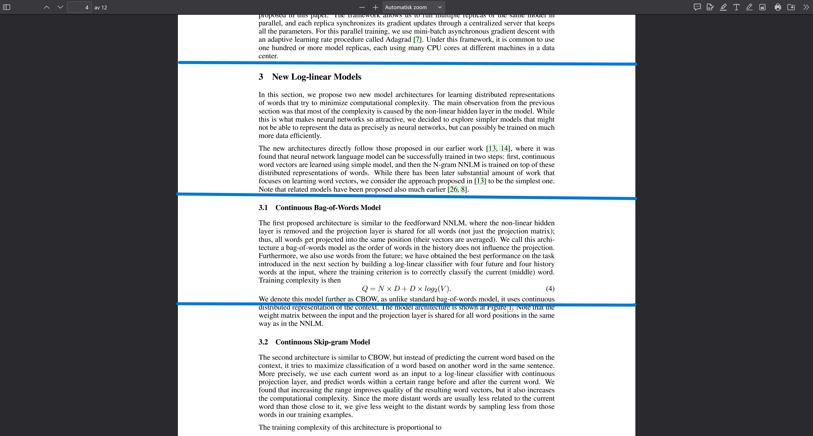
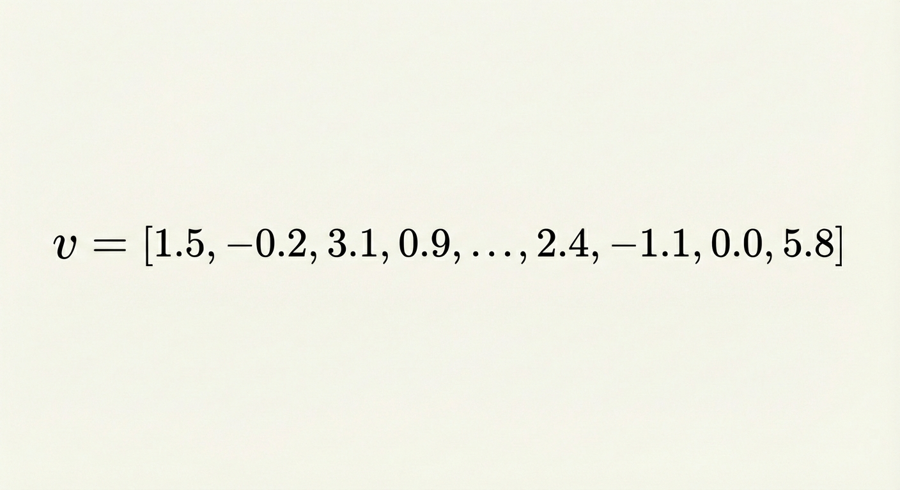
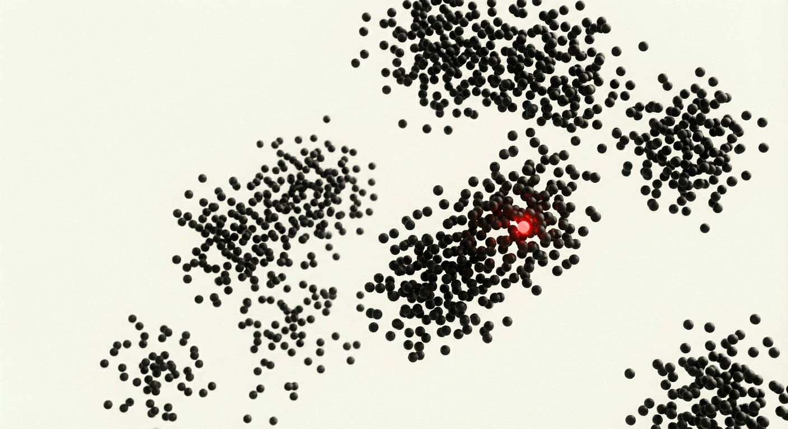
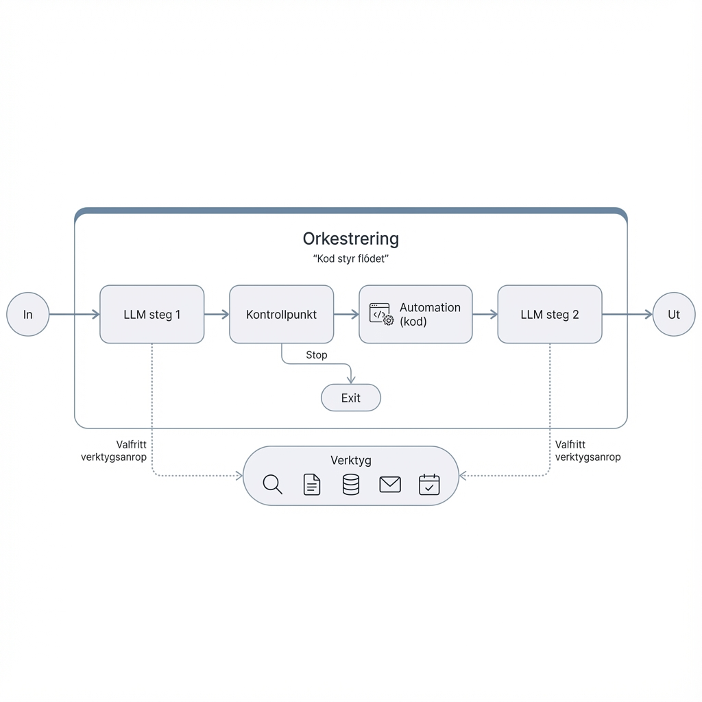

0. Begrepp och Teori
Innan vi hoppar in i Copilot Studio ska vi gå igenom några grundläggande begrepp. Att förstå hur "hjärnan" bakom agenten fungerar gör det mycket lättare att bygga bra lösningar.
🧠 Språkmodeller (LLMs)
En LLM (Large Language Model) är ett stort neuralt nätverk tränat på enorma mängder data. Den har statistiskt lärt sig mönster i språket och fått en "inbakad" förståelse för världen.
Det är viktigt att veta att en språkmodell inte läser ord som vi gör. Dess alfabet består av Tokens.
-
En token är en del av ett ord (vanligt förekommande bokstavskombinationer).
-
Som tumregel: 1000 tokens motsvarar ungefär 750 ord.
Prova själv
Vill du se hur din text delas upp i tokens? Testa att klistra in en mening i verktyget OpenAI Tokenizer.

📏 Kontextlängd (Korttidsminnet)
Varje modell har en begränsning i hur mycket information den kan hålla i huvudet samtidigt. Detta kallas Context Window eller kontextlängd.
- Du kan se det som modellens korttidsminne.
- Om du skickar in en bok på 1000 sidor till en modell med litet minne, kommer den att glömma början innan den läst klart slutet.
- Moderna modeller (som GPT-5) har stora kontextfönster (över 400k tokens), men precisionen kan sjunka om man fyller dem till bredden.
💬 Prompts
En prompt är instruktionen vi skickar till modellen. I Copilot Studio jobbar vi främst med två typer:
- System Prompt: Detta är "instruktionsboken" för agenten. Här definierar vi vem agenten är, vad den får göra och vilken ton den ska ha.
- User Prompt: Detta är vad användaren skriver i chatten (frågan).
Dessa slås ihop när modellen ska generera sitt svar:
graph LR
A[System Prompt\n'Du är en hjälpsam IT-expert...'] --> C(LLM)
B[User Prompt\n'Min dator startar inte...'] --> C
C --> D[Svar]📚 RAG (Retrieval Augmented Generation)
En språkmodell kan mycket, men den kan inte allt. Den vet ingenting om ditt företags interna dokument, manualer eller hemligheter. För att lösa detta använder vi RAG.
RAG handlar om att hämta (Retrieve) rätt information och ge den till modellen.
Hur fungerar det? (Vektorer och Embeddings)
För att datorn ska kunna söka i text måste vi göra om text till siffror (Vektorer/Embeddings).
- Vi tar en PDF (t.ex. en manual).
-
Vi delar upp den i små stycken (Chunks).

-
Varje stycke omvandlas till en Vektor (en lista med siffror som representerar betydelsen).

-
När användaren ställer en fråga, görs även frågan om till en vektor.
-
Vi letar upp de stycken som ligger närmast frågan matematiskt och skickar dem till AI:n.

Visualisering av RAG
Här ser du hur en vektor (frågan) matchas mot en rymd av kunskap.
graph TD
subgraph Knowledge Base
Doc1[Dokument A] --> Chunk1[Stycke 1]
Doc1 --> Chunk2[Stycke 2]
Chunk1 -- Embedding --> V1((Vektor 1))
Chunk2 -- Embedding --> V2((Vektor 2))
end
User[Användarfråga] -- Embedding --> Q((Fråge-vektor))
Q -.->|Söker likhet| V1
Q -.->|Söker likhet| V2
V1 -->|Mest lik!| LLM[Språkmodell]
LLM --> Svar🤖 Vad är en AI-Agent?
Microsoft pratar ofta om två nivåer av AI agnter. Det är viktigt att förstå skillnaden på ett "Agent flows" och en "Agent".
1. Konversations Agent (Chatbot++)
Detta är en språkmodell som har fått tillgång till verktyg (Tools). Den pratar med en människa och kan utföra uppgifter på kommando, t.ex. söka på nätet eller kolla kalendern.
- Exempel: "Boka ett möte med Anna kl 14."
2. Autonom Agent
Dessa agenter behöver inte en människa som startar dem. De kan triggas av händelser, t.ex. att ett mejl kommer in eller att klockan slår 08:00. De arbetar självständigt i bakgrunden.
- Exempel: En agent som övervakar en inkorg dygnet runt.
3. Workflows vs. Agent
Detta är den viktigaste skillnaden i design:
-
Workflows (Process): En förutbestämd väg. Steg 1 leder alltid till Steg 2. Det är stabilt men flexibelt.

-
Agent (Dynamisk): Agenten får ett mål och en låda verktyg. Agenten bestämmer själv i vilken ordning den ska använda verktygen för att nå målet.

Nu när vi har begreppen på plats är det dags att börja bygga! Klicka på nästa kapitel för att sätta upp din miljö.